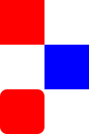

Quick Start Guide - QML Essentials
Handling User Input
One of the great advantages of using QML to define a user interface is that it allows the user interface designer to define how the application should react to events with simple JavaScript expressions. In QML, we refer to those events as signals and such signals can be handled with signal handlers.
For example, consider the following example:
import QtQuick 2.0 Rectangle { width: 200 height: 100 color: "red" Text { anchors.centerIn: parent text: "Hello, World!" } MouseArea { anchors.fill: parent onClicked: parent.color = "blue" } }
This example can be saved as "ClickableHelloWorld.qml" and run with qmlscene. Whenever the user clicks anywhere in the window, the rectangle will change from red to blue. Note that the MouseArea type also emits the clicked signal for touch events, so this code will also work on a mobile device.
Keyboard user input can be similarly handled with a simple expression:
import QtQuick 2.0 Rectangle { width: 200 height: 100 color: "red" Text { anchors.centerIn: parent text: "Hello, World!" } focus: true Keys.onPressed: { if (event.key == Qt.Key_Return) { color = "blue"; event.accepted = true; } } }
By accepting focus, the color can be changed to blue whenever the return key is pressed.
Property Bindings
Objects and their properties form the basis of a graphical interface defined in a QML document. The QML language allows properties to be bound to each other in various ways, enabling highly dynamic user interfaces.
In the following example, the geometry of each child Rectangle is bound to that of the parent Rectangle. If the geometry of the parent Rectangle were to change, the geometry of each child Rectangle would automatically update due to the property bindings.
import QtQuick 2.0 Rectangle { width: 400 height: 200 Rectangle { width: parent.width / 2 height: parent.height } Rectangle { width: parent.width / 2 height: parent.height x: parent.width / 2 } }
Animations
Properties can also be dynamically updated via animations. The QtQuick import provides various animation types which can be used to animate changes to a property's value. In the following example, a property is animated which then gets displayed in a Text area:
import QtQuick 2.0 Rectangle { color: "lightgray" width: 200 height: 200 property int animatedValue: 0 SequentialAnimation on animatedValue { loops: Animation.Infinite PropertyAnimation { to: 150; duration: 1000 } PropertyAnimation { to: 0; duration: 1000 } } Text { anchors.centerIn: parent text: animatedValue } }
The value being displayed will vary from 0 to 150 periodically.
Defining Custom QML Types for Re-use
One of the most important concepts in QML is that of type re-use. An application will probably have multiple visual elements which are all similar (for example, multiple push buttons), and QML allows these sort of things to be defined as re-usable, custom types, to minimize code duplication and maximize readability.
For example, imagine that the developer defines a new Button type in the Button.qml file:
// Button.qml import QtQuick 2.0 Rectangle { width: 100; height: 100 color: "red" MouseArea { anchors.fill: parent onClicked: console.log("Button clicked!") } }
That type may now be re-used multiple times in the application, as follows:
// application.qml import QtQuick 2.0 Column { Button { width: 50; height: 50 } Button { x: 50; width: 100; height: 50; color: "blue" } Button { width: 50; height: 50; radius: 8 } } |  |
In this way, modular user interface elements can be built up and re-used within an application.
See QML Object Attributes for more details on how to develop your own reusable components.